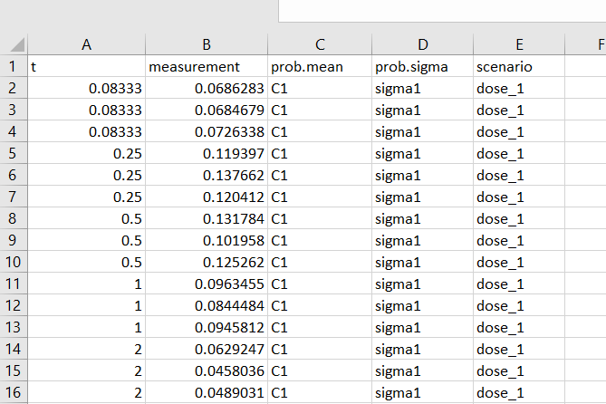
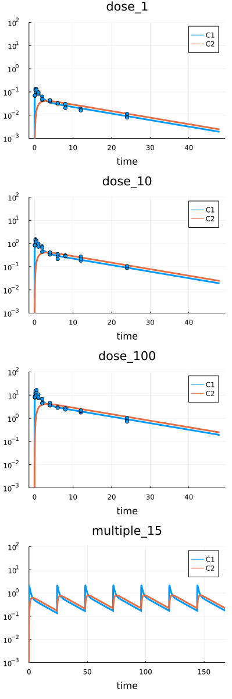

Fitting. Measurements
Under development! Be sure you have the latest HetaSimulator.jl version.
fit method can be used to estimate model parameters based on experimental data. Typically the method is applied to the whole Platform but it can also be used with the selected Scenarios.
Be sure you have the latest HetaSimulator.jl version.
] # switch to Pkg mode
add HetaSimulatorWorking example
This example uses the heta model, which can be downloaded here: index.heta
// Compartments
Vol0 @Compartment .= 1;
Vol1 @Compartment .= 6.3;
Vol2 @Compartment .= 10.6;
// Species
A0 @Species {compartment: Vol0, isAmount: true, output: true} .= 0;
C1 @Species {compartment: Vol1, output: true} .= 0;
C2 @Species {compartment: Vol2, output: true} .= 0;
// Reactions
v_abs @Reaction {actors: A0 = C1} := kabs * A0;
v_el @Reaction {actors: C1 =} := Vol1 * (kel * C1); // Vol1 * (kmax * C1 / (Km + C1));
v_distr @Reaction {actors: C1 = C2} := Q * (C1 - C2);
// Parameters
dose @Const = 20;
kabs @Const = 20;
kel @Const = 0.5;
Q @Const = 1.0;
// kmax @Const = 3e3;
// Km @Const = 9e3;
// single dose event
sw1 @TimeSwitcher {start: 0};
A0 [sw1]= dose;
// multiple dose event, default off
sw2 @TimeSwitcher {start: 0, period: 24, active: false};
A0 [sw2]= dose;
// parameters for fitting
sigma1 @Const = 0.1;
sigma2 @Const = 0.1;
sigma3 @Const = 0.1;Download the file or create index.heta with VSCode in the working directory.
Load the platform into the Julia environment. You should provide the path to the modeling platform as the first argument to load_platform. We will use the same working directory where the index.heta file is located.
using HetaSimulator, Plots
p = load_platform(".")The following table describes 4 scenarios.

The file can be downloaded here: scenarios.csv
Load scenarios into the platform.
scn_df = read_scenarios("./scenarios.csv")
add_scenarios!(p, scn_df)Load measurements
Experimental data can be used for both visualization and parameters estimation. To read more about measurements tables format see the documentation.

The measurements file can be downloaded here: measurements.csv. The dataset includes C1 observable measurements with unknown variance.
The measurement table can be loaded into the Platform using read_measurements and add_measurements! functions.
measurements_df = read_measurements("./measurements.csv")90×5 DataFrame
Row │ t measurement prob.mean prob.sigma scenario
│ Float64 Float64 String String Symbol
─────┼────────────────────────────────────────────────────────
1 │ 0.08333 0.0686283 C1 sigma1 dose_1
2 │ 0.08333 0.0684679 C1 sigma1 dose_1
⋮ │ ⋮ ⋮ ⋮ ⋮ ⋮
89 │ 24.0 1.036 C1 sigma3 dose_100
90 │ 24.0 0.724612 C1 sigma3 dose_100
86 rows omittedadd_measurements!(p, measurements_df)
# display platform content
pPlatform with 1 model(s), 4 scenario(s), 90 measurement(s)
Models: nameless
Scenarios: dose_1, dose_10, dose_100, multiple_15We can plot simulation results together with measured values.
# simulate all
res = sim(p)4-element Vector{Pair{Symbol, SimResult}}
:dose_1 => 80x3 SimResult with status :Success.
:dose_10 => 100x3 SimResult with status :Success.
:dose_100 => 124x3 SimResult with status :Success.
:multiple_15 => 668x3 SimResult with status :Success.# plot all default
plot(res)
One can use the additional yscale, ylim and other Plots keyword arguments to change how the results are displayed.
# plot C1, C2 in log scale
plot(res, vars=[:C1,:C2], yscale=:log10, ylim=(1e-3, 1e3))
Fitting
Before we run the optimization procedure we set the initial (nominal) values for the parameters selected for fitting.
sigma1, sigma2, sigma3 parameters are not included in the model code. They describe the variability of measurement error for the scenarios: dose_1, dose_10 and dose_100.
# fitted parameters
to_fit = [
:kabs => 8.0,
:Q => 4.0,
:kel => 2.2,
:sigma1 => 0.1,
:sigma2 => 0.1,
:sigma3 => 0.1,
]
res_optim = fit(p, to_fit) # default fitting┌ Warning: Scenario ":multiple_15" has no measurements. It will be excluded from fitting.
└ @ HetaSimulator y:\HetaSimulator.jl\src\fit.jl:77
FitResult with status :XTOL_REACHED
Status: XTOL_REACHED
Optimal values: [:kabs => 18.868605026704916, :Q => 4.043662480774219, :kel => 0.17104243648378176, :sigma1 => 0.020347955494158528, :sigma2 => 0.31561050699802246, :sigma3 => 0.5716026958426483]
OF value: 140.96503722971997
OF count: 8612The scenario multiple_15 does not include any measurement. That's why we see the warning message here. This is not an error.
The optimal value of the parameters can be obtained with optim method applied to FitResult.
# optimal parameters
optim(res_optim) 6-element Vector{Pair{Symbol, Float64}}:
:kabs => 18.868605026704916
:Q => 4.043662480774219
:kel => 0.17104243648378176
:sigma1 => 0.020347955494158528
:sigma2 => 0.31561050699802246
:sigma3 => 0.5716026958426483To display the simulations with the updated parameters values we can use parameters argument in sim.
# check fitting quality
res = sim(p, parameters = optim(res_optim))
plot(res, yscale=:log10, vars=[:C1,:C2], ylims=(1e-3,1e2))
Fitting with parameters table
The parameters setup that is used in fit can also be loaded from tabular format. The description of tabular format can be found in documentation.
For example we will use the following table. It can be downloaded here: parameters.csv

The table can be loaded with read_parameters method.
# read parameters from table
params_df = read_parameters("./parameters.csv")6×6 DataFrame
Row │ parameter scale lower upper nominal estimate
│ Symbol Symbol Float64 Float64 Float64 Bool
─────┼────────────────────────────────────────────────────────
1 │ kabs lin 1.0 100.0 8.0 true
2 │ kel log 0.0 60.0 2.2 true
3 │ Q log10 1.0 80.0 4.0 true
4 │ sigma1 lin 0.0 10.0 0.1 true
5 │ sigma2 lin 0.0 10.0 0.1 true
6 │ sigma3 lin 0.0 10.0 0.1 trueAs before we can use this as a setup DataFrame for parameters estimation.
res_optim = fit(p, params_df)┌ Warning: Scenario ":multiple_15" has no measurements. It will be excluded from fitting.
└ @ HetaSimulator
FitResult with status :FTOL_REACHED
Status: FTOL_REACHED
Optimal values: [:kabs => 8.669590504032879, :kel => 0.2299120380231296, :Q => 3.386457652767808, :sigma1 => 0.010105725225267037, :sigma2 => 0.09951673713071268, :sigma3 => 0.6024808584834973]
OF value: -101.7645013649068
OF count: 417Additional optimization-specific options
Internally HetaSimulator uses NLopt library. One can choose the optimization algorithm as well as additional options.
Read more about NLopt algorithms choice: https://nlopt.readthedocs.io/en/latest/NLopt_Algorithms/
res_optim = fit(
p,
params_df,
fit_alg = :LN_SBPLX,
ftol_abs = 1e-5,
ftol_rel = 0,
maxeval = 10^6
)
optim(res_optim)There are several optimization related arguments, which are available for a user. To learn more read about fit method in API documentation.
fit_alg: fitting algorithm. Default is:LN_NELDERMEADftol_abs: absolute tolerance on function value. Default is0.0ftol_rel: relative tolerance on function value. Default is1e-4xtol_rel: relative tolerance on optimization parameters. Default is0.0xtol_rel: absolute tolerance on optimization parameters. Default is0.0maxeval: maximum number of function evaluations. Default is1e4maxtime: maximum optimization time (in seconds). Default is0